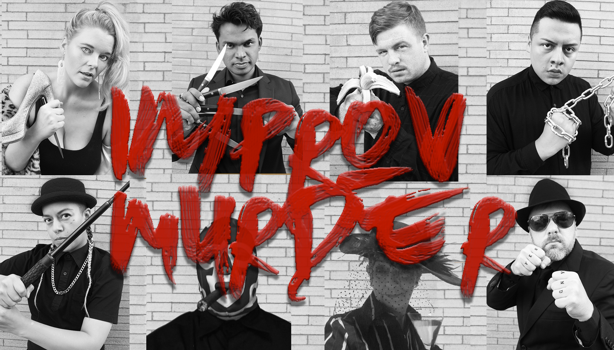

Marsden began studying improv at DSI in Carrboro, NC, in 2013. In 2016, Marsden moved to Chicago to study improv at the Second City. Marsden completed the Second City’s improv program, won two competitions with her troupe, Improv Murder, and is currently completing her second show-run in the De Maat Studio Theatre. For show-times and details, check out the calendar on the homepage!
